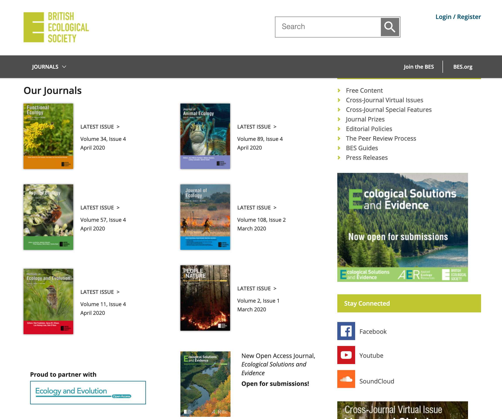
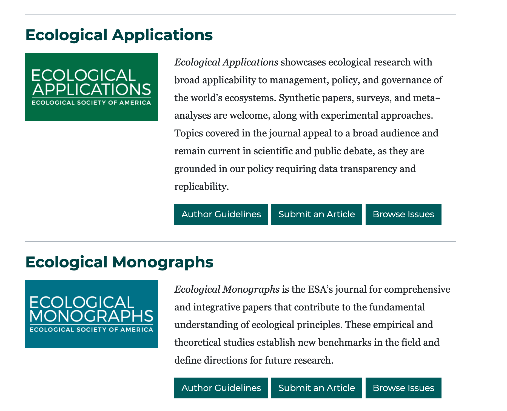
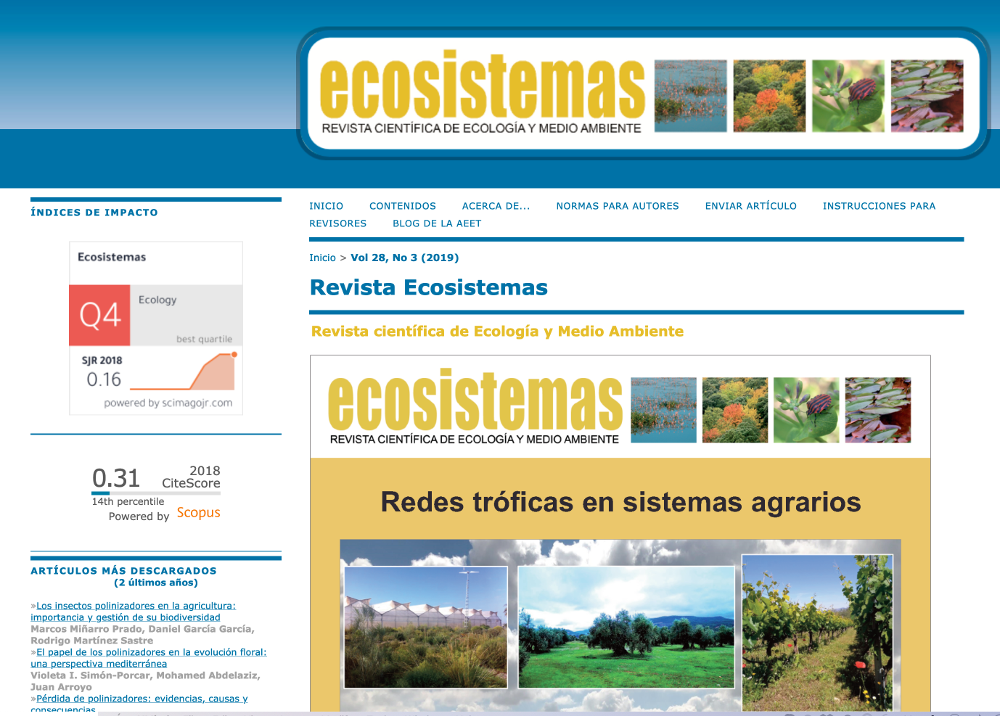
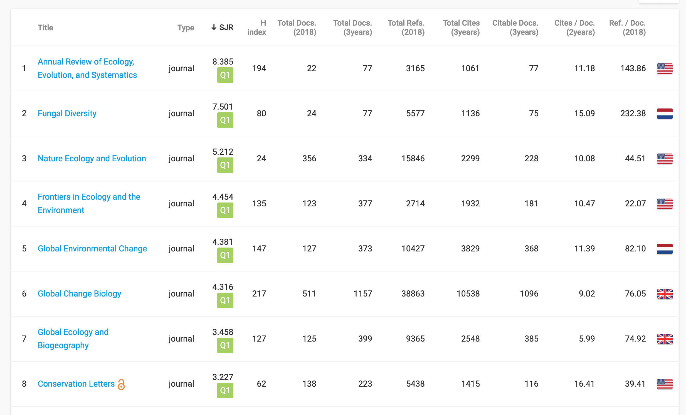
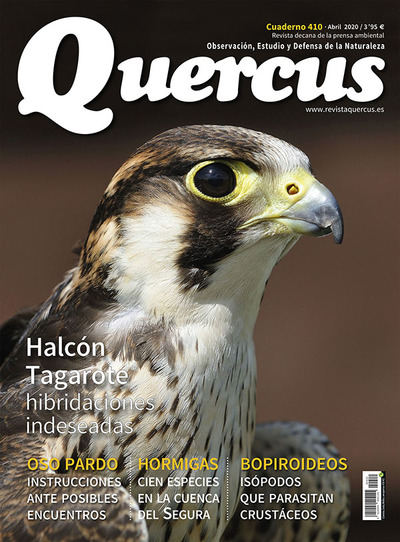
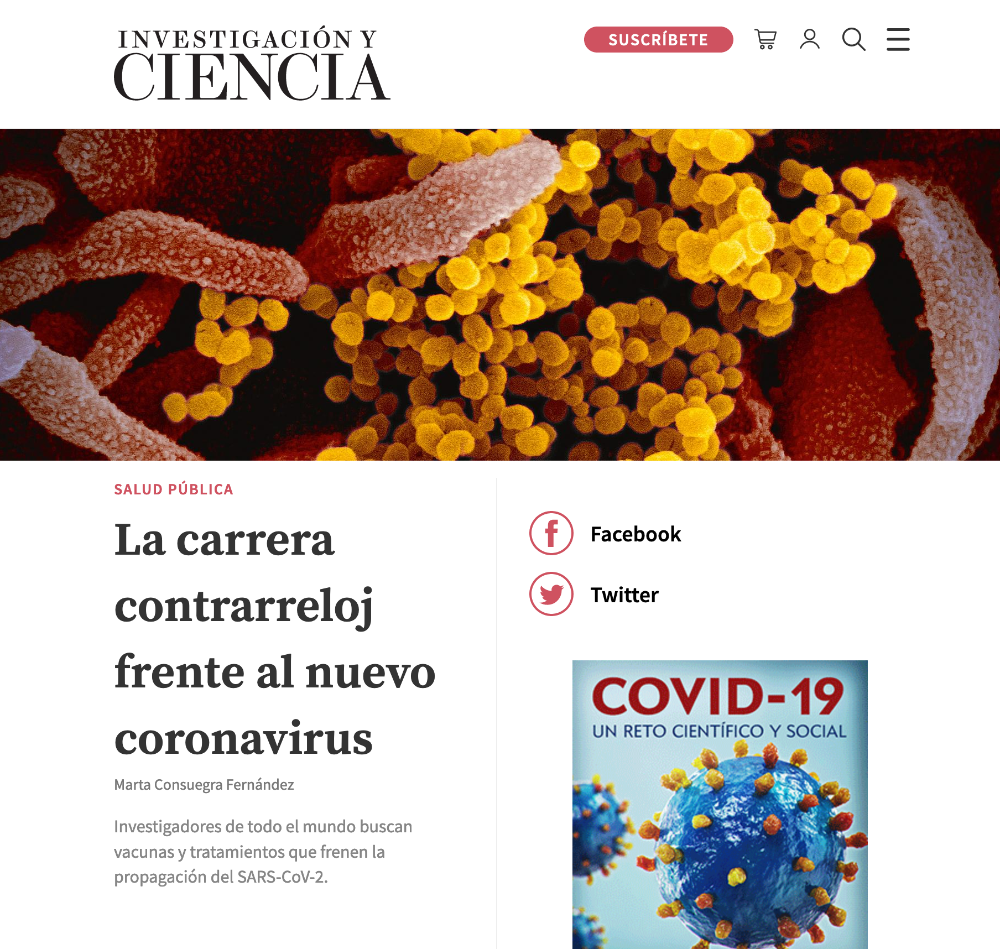
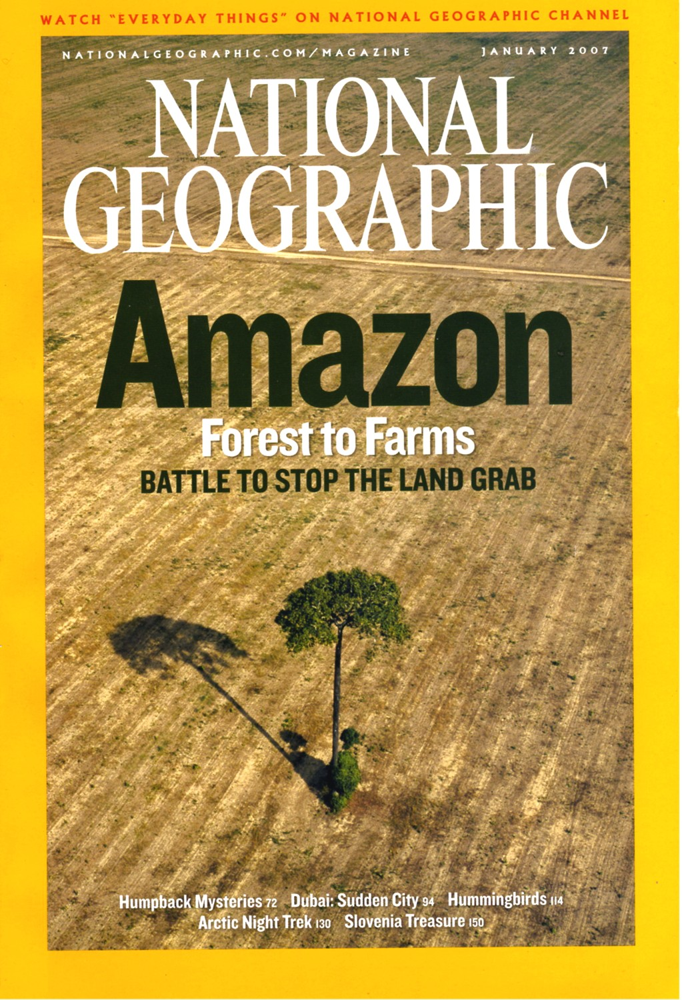

- Práctica sobre búsqueda bibliográfica
- Objetivos
- Competenciales
- Aprender a buscar literatura científica
- Conocer los distintos tipos de artículos científicos.
- Aprender la estructura de un artículo científico.
- Usar buscadores de bibliografía científica digital.
- Saber distinguir la literatura científica de la periodística y de la de opinión.
- Operacionales
- Responder a una serie de preguntas buscando bibliografía sobre las mismas.
- Ideas generales sobre publicaciones con información científica.
- Artículos científicos.
- Definición.
- Es la unidad elemental en la que se distribuye y divulga el conocimiento entre científicos.
- Los artículos científicos contienen información novedosa (no publicada antes) sobre un tema específico.
- Estructura
- Título
- Autoría: lista de autores del artículo.
- Resumen y palabras clave
- Principales ideas y descubrimientos realizados en el artículo.
- Se incluye una lista de palabras clave para mejorar la indexación del artículo.
- Introducción
- Identificación de la cuestión a abordar en el artículo (ej. Relación entre la temperatura y el crecimiento de la vegetación)
- Relación del tema a abordar con lo que ya se sabe. Contextualización científica.
- Objetivos del trabajo.
- Hipótesis del trabajo. Esta parte es fundamental porque permite definir las preguntas que los autores se formulan en el trabajo y que tratan de responder en el mismo.
- Material y métodos
- Metodología utilizada para abordar el problema en cuestión.
- Cómo se ha diseñado el trabajo.
- Experimento de campo.
- Análisis de datos existentes.
- Encuestas
- etc.
- Datos utilizados.
- Material (de campo o laboratorio) utilizado.
- Resultados
- Enumeración y descripción de los hallazgos obtenidos. Ej. Al aumentar la temperatura, se reduce la probabilidad de germinación de la planta X.
- Descripción de las evidencias encontradas usando tablas, gráficos, esquemas, etc.
- Discusión
- Valoración de los resultados anteriores a la luz del conocimiento científico existente.
- Incluye un jucio subjetivo de los resultados obtenidos. Ej. El hecho de que al aumentar la temperatura se reduzca la probabilidad de germinación puede deberse a que en estas condiciones proliferan hongos que degradan el tejido...
- Es importante incorporar referencias bibliográficas.
- Conclusiones
- Síntesis del trabajo.
- Principales conclusiones obtenidas.
- Referencias bibliográficas
- Conjunto de artículos (y otro material bibliográfico) que ha sido citado en el texto.
- Es fundamental porque de esta forma relacionamos lo que dice el artículo con lo que han escrito otros colegas.
- Es la forma de materializar la famosa cita de Newton

- Ejemplo
- Revistas científicas.
- Publicaciones periódicas (mensual o bimensualmente)
- Editadas por
- Sociedades científicas
-
- 
-
- 
-
- 
-
- Editoriales privadas
- Suelen agruparse por ámbitos temáticos
- Revistas de botánica
- Revistas de ingeniería química.
- Revistas de virología
- etc.
-
- 
- Proceso de publicación (en imágenes y con cierta visión sesgada por mi parte)
-
- Las editoriales tienen un negocio que se parece al concepto de cártel o monopolio. Cobran a los autores por publicar y a las instituciones donde éstos trabajan por leer sus artículos...
- Artículos o productos de divulgación científica.
-
- Revistas periódicas
- 
- 
- 
- Canales de videos
-
-
- Informes
- Textos que resumen el conocimiento científico sobre un tema concreto con objeto de incidir en ciertas políticas y procesos de toma de decisiones.
- En teoría son los productos que generan los científicos para ayudar a los gestores a tomar decisiones.
- Ejemplos
-
- Cómo acceder a la literatura científica
- Tipos de publicaciones a efectos de su accesibilidad
- Open access: libres para todos en internet.
- De pago: Solo son accesibles si pagas tú o tu institución.
- Buscadores de bibliografía
- Cada revista publica artículos en sus propios servidores y los ofrece (gratis o previo pago) en sus webs.
- Buscar así es un poco complejo porque hay que ir revista a revista.
- Además hay varios catálogos que agregan las publicaciones de diversas revistas.
- Esto es mucho más cómodo porque permite buscar por autores, palabras clave, títulos, etc.
- Ejemplos
-
- Búsqueda plana, sin muchas opciones de personalización.
-
- Búsqueda muy detallada
- Opción de personalizar búsquedas
- Opción de exportar resultados
-
- En realidad no es un buscador de bibliografía, sino una red social para científicos.
- Muchos investigadores suben ahí sus publicaciones y las dejan en abierto.
-
- Buscador propiedad de una de las editoriales más potentes (Elsevier)
- SciHub
-
- Manos a la obra
- Preguntas a responder
- ¿Son útiles los espacios naturales protegidos para frenar la pérdida de biodiversidad?
- ¿Es la reforestación masiva una herramienta útil para reducir el impacto del cambio climático?
- Procedimiento de trabajo
- Formación de grupos de 3 personas para abordar la pregunta.
- Plantilla con estructura común en el que los miembros del equipo almacenan la información sobre la pregunta en cuestión.
- Completar las secciones del documento
- Elementos clave de la pregunta seleccionada. Estos elementos se usarán para hacer la búsqueda bibliográfica.
- Selección de 3-4 artículos científicos recientes (después de 2010) sobre la pregunta .
- Selección de al menos 1 artículo o informe no científico sobre la pregunta.
- Extracción de contenido relevante del material anterior.
- Elaboración de conclusiones.